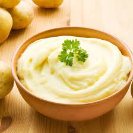

Menu
Purée de Grand-Maman

Ingrédients (pour 6 personnes)
- Pomme de terre : 1,5 kg
- Beurre : env. 250 g
- Lait : env. 300 ml
- Crème fraiche
- 1 jaune d'oeuf
Préparation
- Eplucher et couper les pommes de terre (pdt) puis faites les cuire dans une grande casserolle d'eau salée.
- Controler la cuisson des pdt avec la pointe d'un couteau. La pdt doit être tendre. Si elle commence à se déliter dans l'eau, c'est qu'elles sont trop cuites !
-
Préparer le lait de coco en le versant dans une casserolle. Faire chauffer à feu doux et fouetter le lait pour le faire mousser.
Retirer le lait du feu dés le point d'ébullition atteint
- Mettre le beurre au fond du bol. Une fois les pdt cuite, passer les au moulin à légumes pour un meilleur résultat puis mélanger la préparation.
- Rajouter la mousse de lait puis le lait en plusieurs fois. La quantité exacte de lait va dépendre de la texture de la purée recherchée.
- Rajouter une bonne cuillère à soupe de crème fraiche et le jaune d'oeufs. Bien mélanger pour obtenir une purée onctueuse et homogème.
- Assaisonner à la convenance : noix de muscade, sel, poivre, etc.
Menu